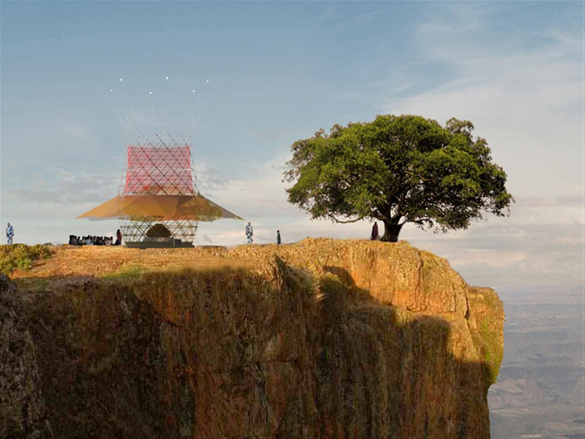
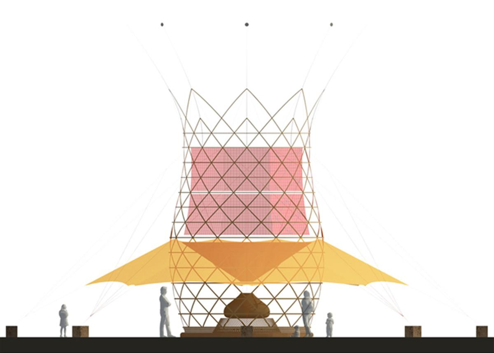
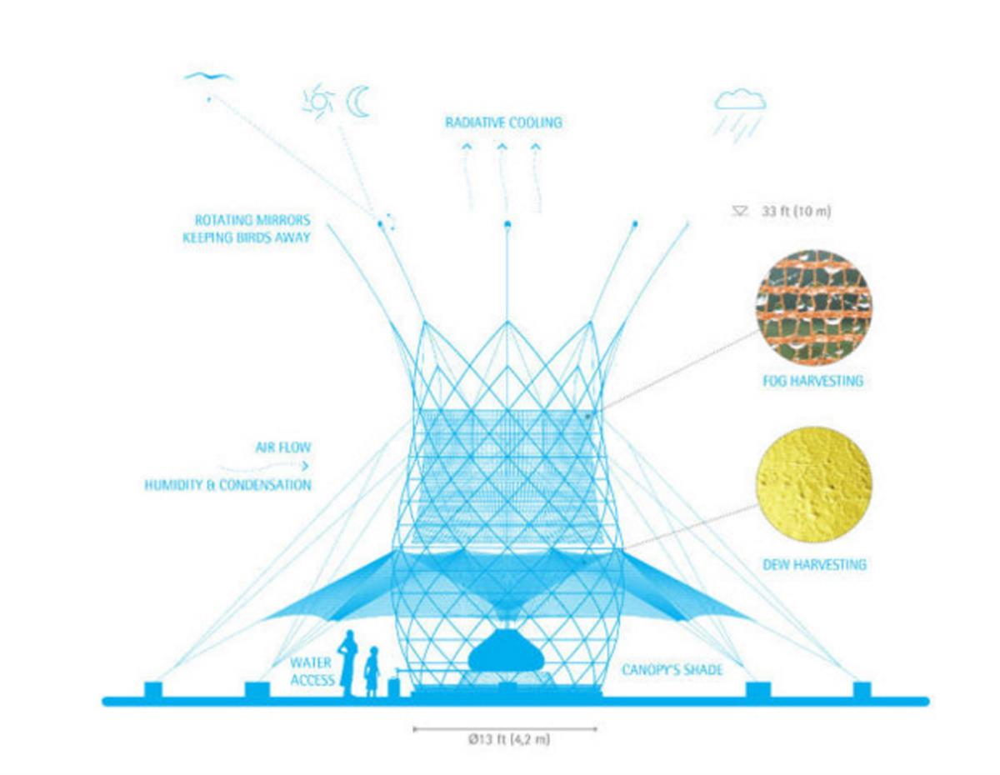
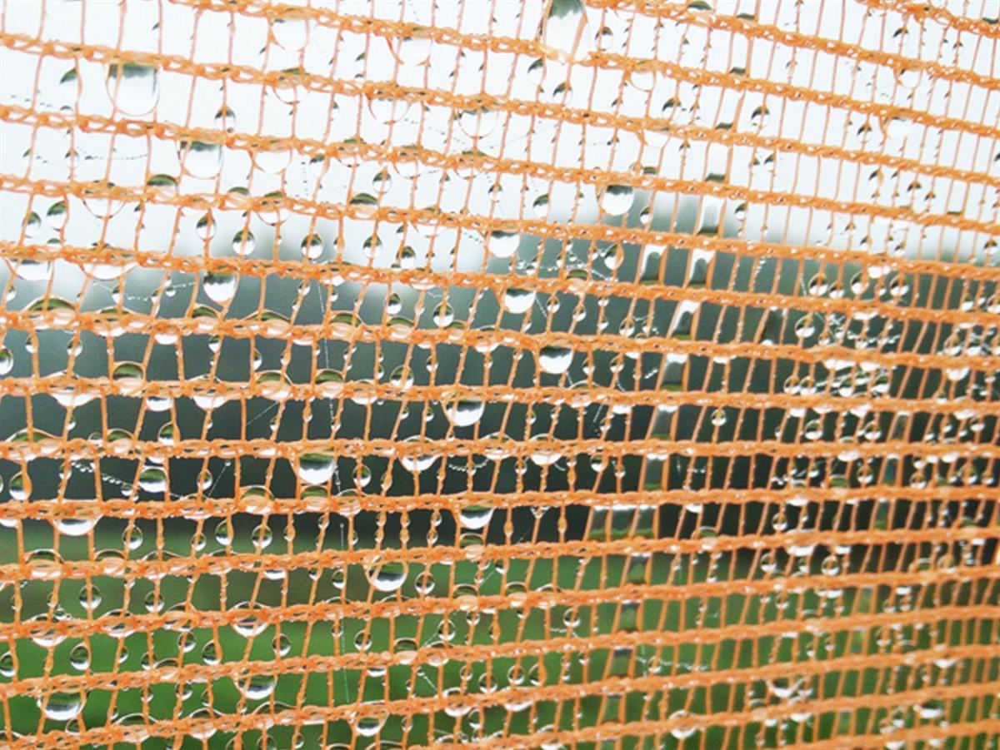
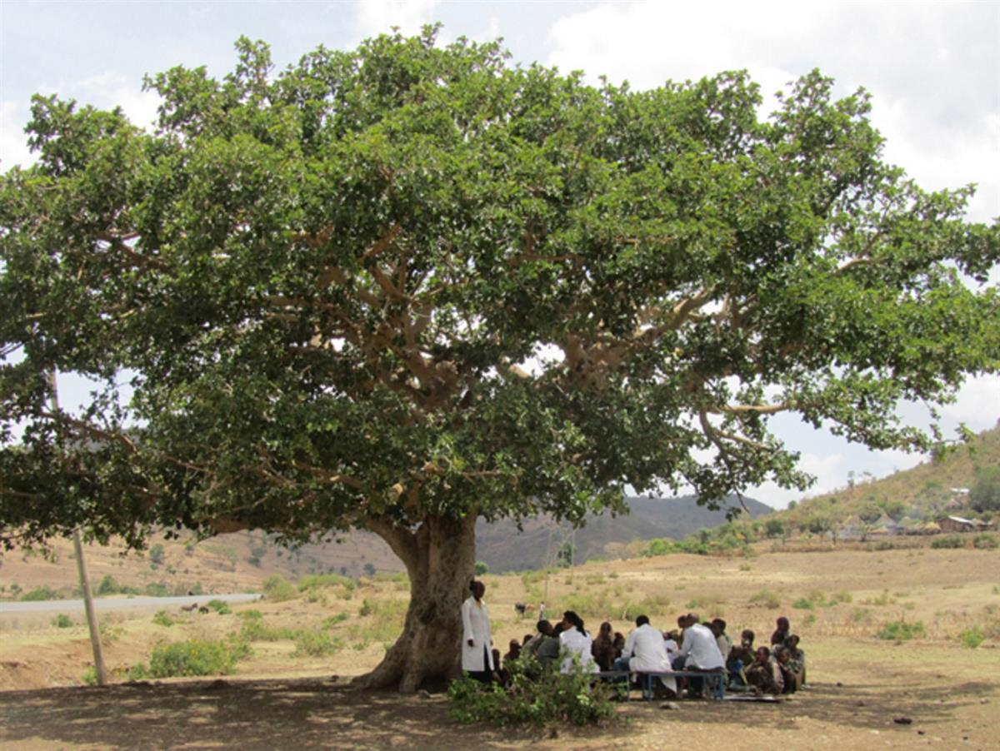
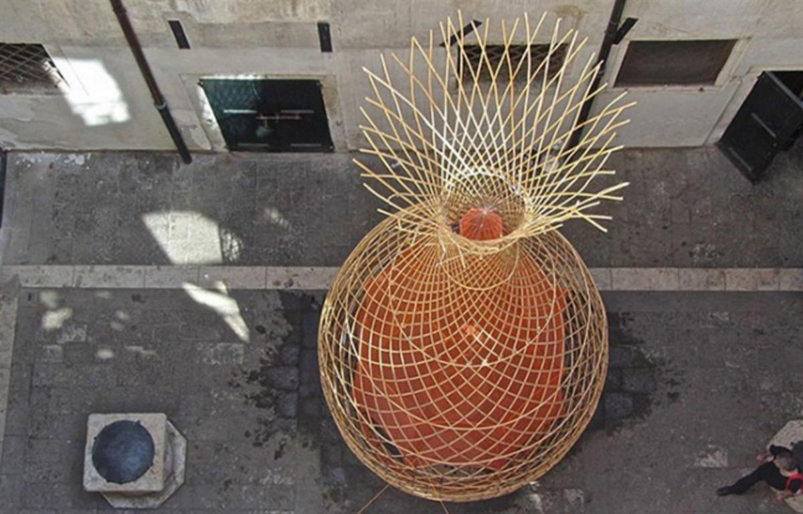

The need for fresh water has pushed humans into exploring new and innovative techniques. For thousands of years, in regions where water is scarce, sometimes using air wells, people have harvested water from the rain, fog or even dew. In Ethiopia, we can witness an upgrade to the age-old technique. With a slick modern design, the WarkaWater will definitely improve collection of water from the surrounding environment. Standing 30 ft. tall and 13 ft. wide, the bamboo tower was envisioned by Arturo Vittori and his team, Architecture and Vision. How does it work? Well, the mesh netting installed on the structure captures moisture from the air and directs it into hygienic holding tank. Then, you can access the water via a spout. Check out the blueprints and other images involving this modern technique of collecting water!






The WarkaWater Tower, which is easy and cheap to construct, uses no electricity and has the ability to produce up to 25 gallons of water in a day by capturing condensation and could be the answer to water scarcity in parts of the world that have little to no access to water. A project developed by Architecture and Vision
SOURCE: ARCHITECTURE DESIGN AND ADVISORY SERVICE
SOURCE: GOOD HOME DESIGN